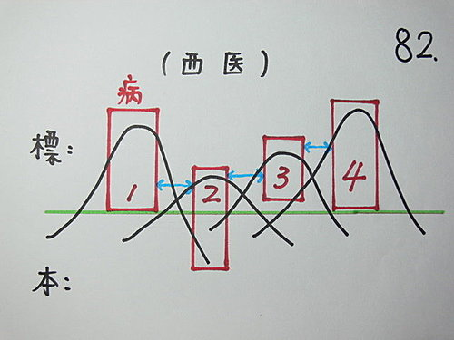
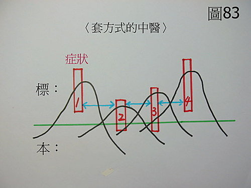
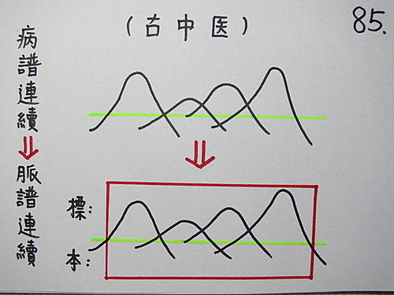

脈理醫理學 3.0.2：病譜連續（三）‥‥‥病譜連續的模型——由病譜連續的模型來看西醫的漏洞、套方式中醫的漏洞、古中醫（病譜連續→→脈譜連續）。（2）
作者：陳建元
上接脈理醫理學 3.0.1：病譜連續（二）‥‥‥病譜連續的模型——由病譜連續的模型來看西醫的漏洞、套方式中醫的漏洞、古中醫（病譜連續→→脈譜連續）。（1）
現在我們用病譜連續的模型，來探討西醫的漏洞、套方式中醫的漏洞、古中醫（病譜連續→→脈譜連續）：
1. 西醫的漏洞：〈圖82〉。

紅色框塊寫上〝病〞字是代表西醫是以疾病的名稱來架構對人體的觀察。西醫的最常用病名約200～300個，其他較不常用的也有千餘個，所以加起來應該有近2000個之譜，所以紅色框塊所能掌握的區域還是蠻大的。只有紅色框塊 2深入至本區，其他框塊都只到標區，表示西醫目前大部分的醫療還是停留在治標不治本的階段〈目前醫療可以治本的不到一半〉。紅色框塊3是表示某些疾病連治標也有問題。各個紅色框塊是分開的，代表西醫沒有整體觀念，各個疾病名稱是各自獨立的。藍色的雙箭頭區則是漏洞區，這是因為以各個「病」為主軸來觀察人體的結果，在病譜連續上必然會留下漏洞。
另外，西醫藥物的副作用多，這也是要注意的。
2. 套方式中醫的漏洞：〈圖83〉。

紅色框塊寫著〝症狀〞，是代表套方式的中醫，是以症狀為主來開藥的。這也是目前最大宗的中醫隊伍，套方式的中醫在開藥的時候，並沒有對著〝病機〞來開藥，普遍對於脈診也不熟悉，只是對著患者的症狀來開藥，某病用某方，某症（證）用某方而已，這是最大的特徵，如果比對歷代諸家心法（見基礎概論 45：正統中醫歷代諸家的心法軌跡———你學的是正統中醫嗎？ 1），就會發現這種用藥法，其實只是民間的方便用藥法，並非歷代諸家在用藥的方式。因為症狀不一定會等於病機，所以這種用藥法，有著很大的不確定性。紅色框塊 2、3 有到達本區，表示有時候可以治本。紅色框塊1、4，是表示但也常常連治標都有問題。各個紅色框塊是分開的，代表對疾病的掌握是片片斷斷的。藍色雙箭頭的漏洞區，則比西醫還嚴重，代表著中醫由以前的可以治大病，萎縮成只能治小病，再萎縮成只能做保養美容。這些都反應著目前民眾對中醫的觀感和風評，也反應著民間套方用法的不足性。
3. 古中醫（病譜連續→→脈譜連續）：〈圖85〉。

病譜是連續的，但因為疾病是出在於人體身上，而脈象又是人體的內在的全面反應，所以脈譜也是連續的，而不是片片斷斷的局部。譬如一個人在賽跑前，他的脈是和緩的，賽跑時是劇烈洪大的，如果是超過體能極限而臉色發白，則脈象又是浮虛散的。譬如產婦有特殊的滑脈，若中途有感冒則又變成浮緊脈，等到感冒痊癒時，浮緊脈不見了又退回原來的滑脈，等到足月進產房生產時又變成沉緊脈，生產完畢又變成虛弱的虛散動脈。數不盡的人體一切活動都標註著脈象是完全跟著人體在走的，就像影子一樣如影隨行的對應著人體的變化而做出相對應的反應，病譜的連續也對應著脈譜的連續，所以用這個窗口來觀察人體的變化，最能觀察得一覽無遺。
古中醫是以明脈證、識病態、色脈合一來觀察和治療人體的，而且對脈診，皆非常的重視，可參看歷代諸家心法軌跡（見基礎概論 45：正統中醫歷代諸家的心法軌跡———你學的是正統中醫嗎？ 1）。
〈圖85〉表示病譜連續與脈譜連續是一致而相對應的，紅色的色框只有一個而深入標本兩個區域，代表可以標本兼顧，而且對於所有疾病的瞭解，會融合成一個整體，而不是片片斷斷鬆散的的表面知識。
【引用請先來信告知徵求同意，若有涉及販售營利等商業行為，版權所有拷貝盜用必究。】
【藥王脈學講壇】http://blog.xuite.net/drjychen/twblog